นิทรรศการเดี่ยว · ชุดผลงาน
At The EndYou Must Wake Up
ดนย บุญทัศนกุล · Danaya Buntasnakul
จิตรกรรมสีน้ำ หมึก และลายเส้นบนกระดาษ

Artist Statement · แนวคิดศิลปิน
ดนย บุญทัศนกุล ทำงานอยู่บนเส้นแบ่งบาง ๆ ระหว่างการหลับและการตื่น ระหว่างโลกที่เรามองเห็นกับโลกที่เราเพียงรู้สึกถึง
เขาผสมสีน้ำ หมึก และจังหวะแบบดนตรีเข้าด้วยกัน จนภูมิทัศน์กลายเป็นห้วงความฝัน และความฝันกลายเป็นที่ที่เรากล้าเผชิญสิ่งที่ตื่นอยู่เรากลับไม่ยอมรับ
เขาเรียนจิตรกรรมที่มหาวิทยาลัยเชียงใหม่ (ศิลปมหาบัณฑิต) และเคยศึกษาที่ L'Accademia di Belle Arti di Firenze ประเทศอิตาลี ผ่านนิทรรศการเดี่ยว 7 ครั้งในรอบ 15 ปี งานของเขาวนเวียนอยู่กับความใกล้ชิด การพลัดพราก และโอกาสที่หมุนกลับมาใหม่ได้เสมอ—เหมือนนาฬิกาทรายที่เพียงรอวันถูกพลิก
นอกจากเป็นจิตรกร เขายังเป็นนักแสดงละครเวทีและนักร้องประสานเสียงที่ได้รับรางวัลระดับนานาชาติ ประสบการณ์บนเวทีและในเสียงเพลงไหลกลับเข้ามาในงานวาด ในรูปของจังหวะ การฟัง และการมองอย่างช้า ๆ
I Falling Asleep
เคลิ้มหลับ
นิทรรศการนี้ขอชวนผู้ชมเดินผ่านความฝันหนึ่งคืน เริ่มจากภาพของสุนัขจิ้งจอกที่ขดตัวหลับกลางทุ่ง—ภาพแทนของจิตใจที่กำลังพักผ่อนเพื่อจะหายดี ก้อนเมฆแปลงร่างเป็นสัตว์ ปราสาทเล็ก ๆ ตั้งอยู่บนหลังของมัน ทุกอย่างค่อย ๆ จมลงสู่ห้วงฝัน
II The Dream
ในความฝัน
At The End You Must Wake Up คือบันทึกของเรื่องที่เกิดขึ้นแล้วผ่านไป แต่ส่วนลึกของใจยังไม่ยอมปล่อยความรู้สึกที่อยู่นอกเหนือการควบคุม การวาดชุดนี้จึงเป็นการบำบัดตัวเอง—กล่อมใจให้หลับอยู่ในฝัน จนถึงวันหนึ่งที่ใจถูกชำระจนใส และพร้อมจะลืมตาตื่นขึ้นอีกครั้ง
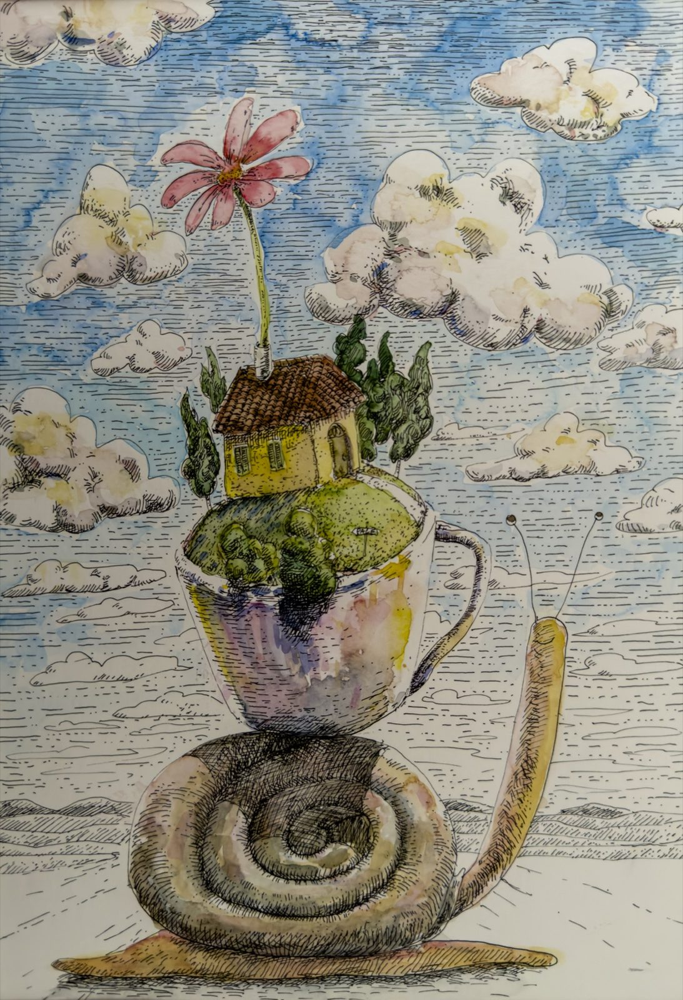
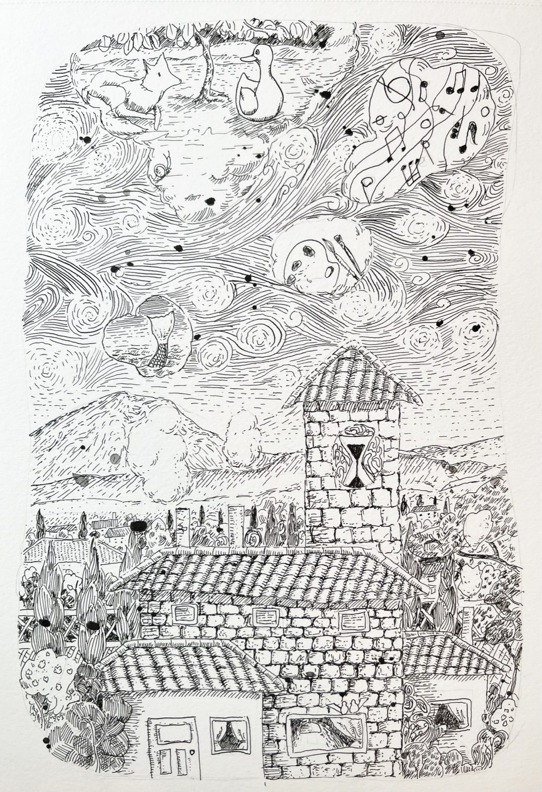
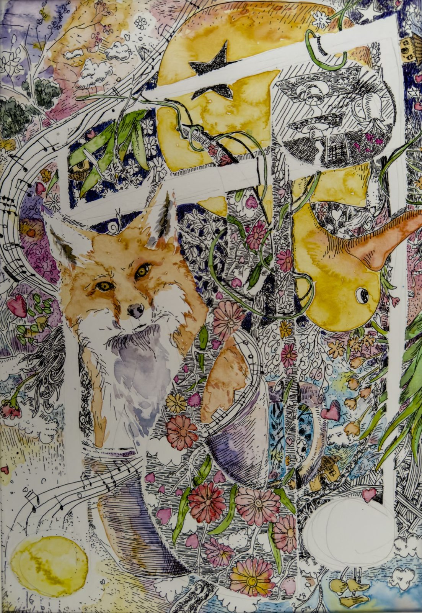
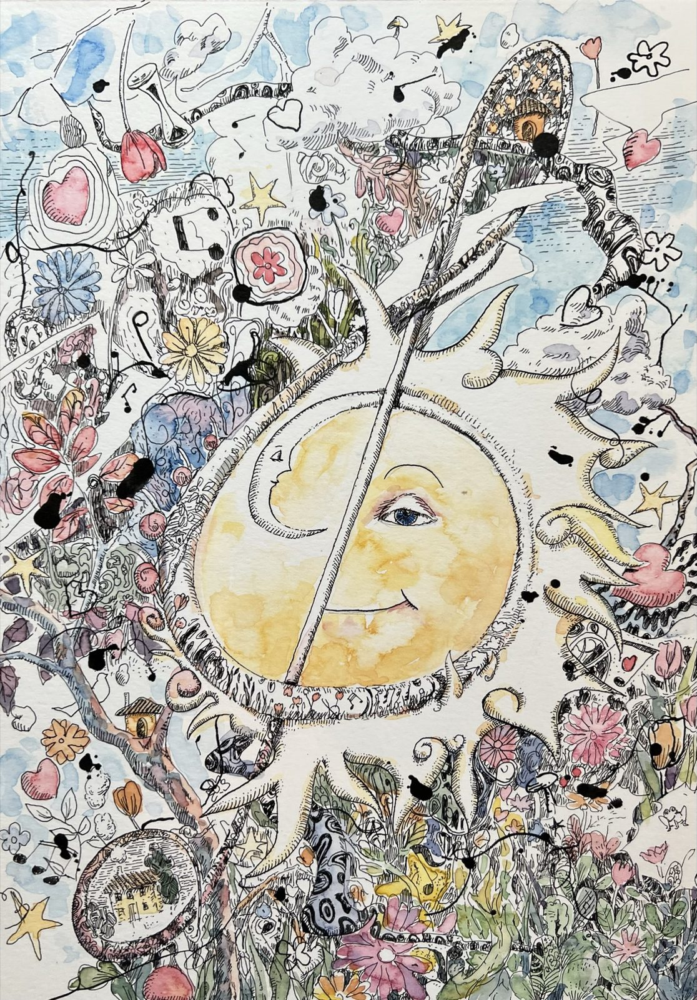
III The Mechanism
กลไกของนาฬิกาทราย
โอกาสผ่านมาแล้วผ่านไป หลายเรื่องเริ่มต้นและจบลงอย่างไม่มีเยื่อใย เหมือนความฝันที่เราไม่อยากลืมตาตื่น นาฬิกาทรายมีความหมายมากกว่าเครื่องนับเวลาถอยหลัง เมื่อทรายหมด มันเพียงนิ่งรอวันถูกพลิกกลับ เพื่อเริ่มต้นใหม่อย่างไม่รู้จบ—เช่นเดียวกับความรัก ความสัมพันธ์ ชีวิต และโอกาส งานหมึกในองก์นี้คือ "ภายใน" ของนาฬิกาเรือนนั้น: เส้นที่ถักทอกันแน่นจนเวลากลายเป็นวัฏจักร
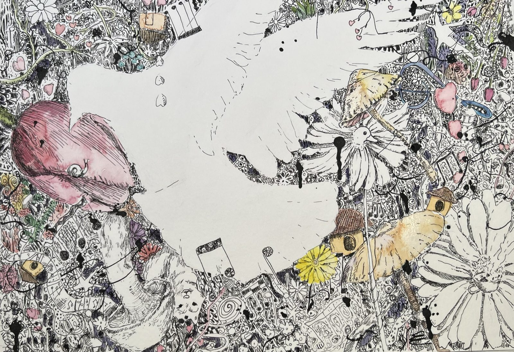
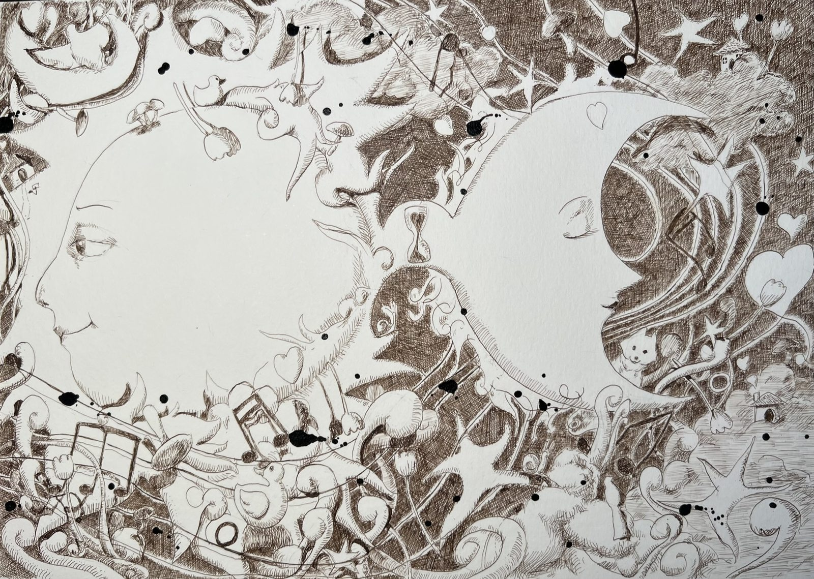
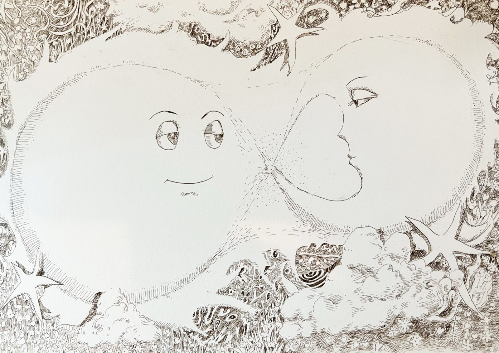
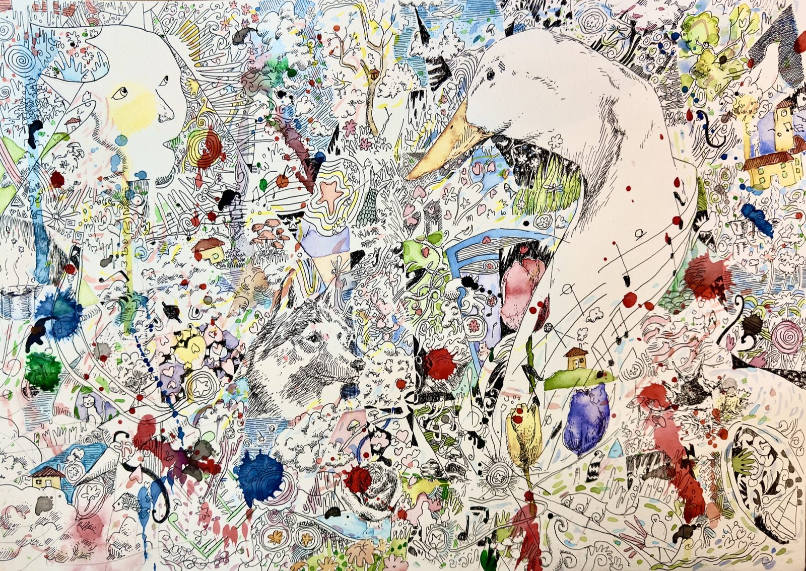
IV The True Home
บ้านที่แท้จริง
OSHO ว่าไว้ว่า ปัญญาญาณเปรียบเหมือนสะพานที่เชื่อมทางให้เราเดินกลับสู่บ้านที่แท้จริง—บ้านที่มีอยู่มาตลอด ตั้งอยู่ตรงนั้นก่อนเราเกิดและหลังเราตาย เราไม่ใช่เจ้าของบ้าน เราเป็นส่วนหนึ่งของมัน สะพานที่พาไปสู่บ้านนั้นซ่อนอยู่ทั่วทุกหนแห่ง—ในแววตาของสุนัขใต้แดด ในควันบาง ๆ จากถ้วยกาแฟ หรือแม้แต่ในภาพวาดสักภาพ ลายเส้นหมึกบนกระดาษชุดนี้ คือสิ่งที่ศิลปินค้นพบแล้วนำกลับมาเล่า
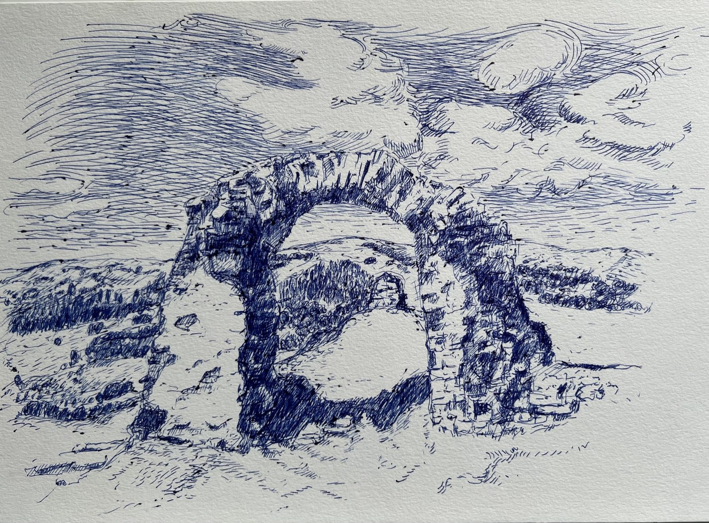
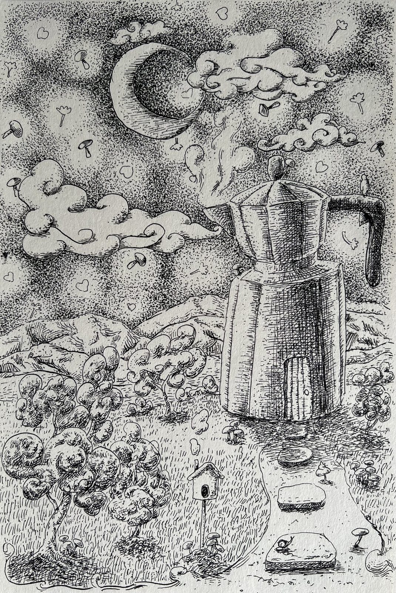
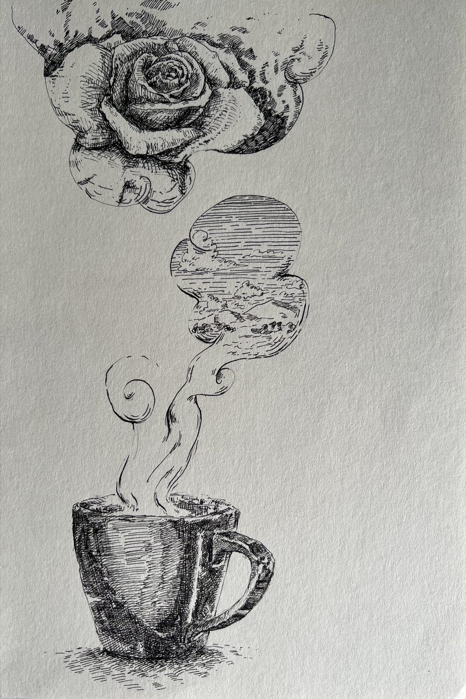
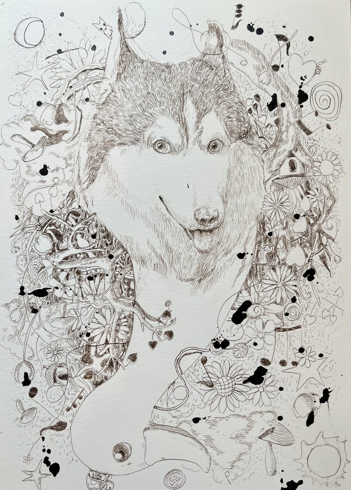
V Waking
ลืมตาตื่น
เมื่อใจค่อย ๆ ถูกชำระ สีสันก็กลับคืนมา ความฝันไม่ได้จางหาย แต่แปรเป็นแสง—ดอกไม้บานอยู่ในแจกัน ดวงตะวันละลายลงอย่างช้า ๆ และนาฬิกาทรายก็พร้อมจะถูกพลิกกลับอีกครั้ง นี่คือชั่วขณะก่อนการลืมตา ที่ทุกสิ่งยังพร่างพราวด้วยสีของความหวัง
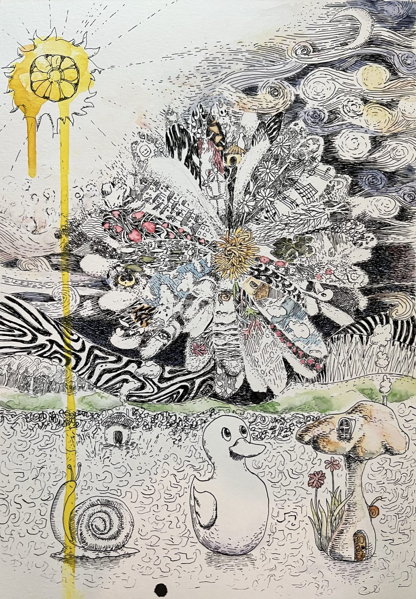
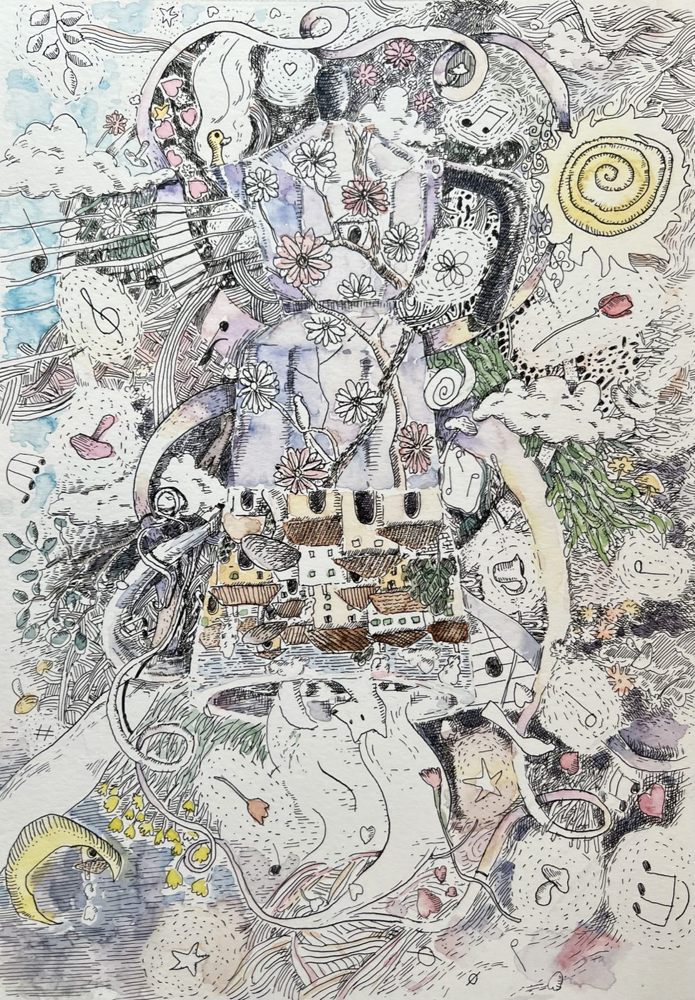
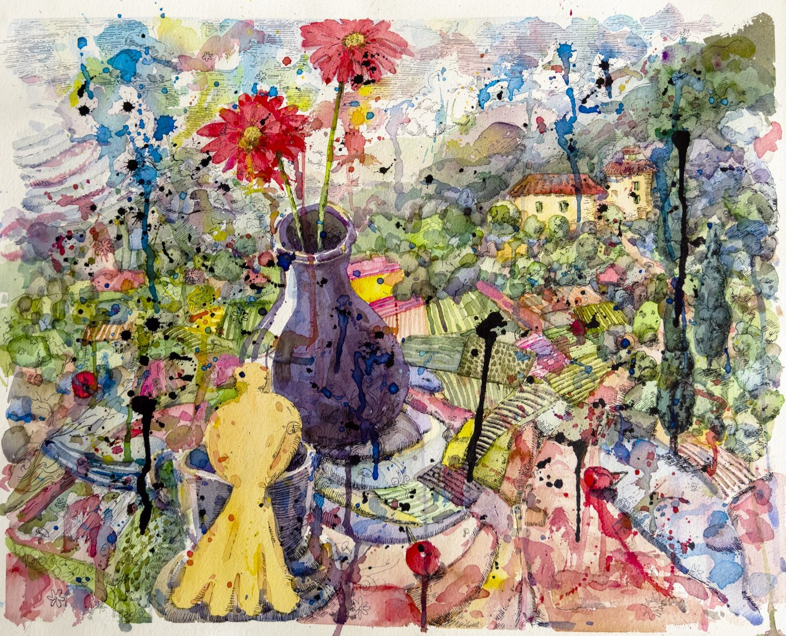
Curriculum Vitae
Danaya Buntasnakul
ดนย บุญทัศนกุล · เกิด 1 กันยายน 2522 · ทำงานที่กรุงเทพฯ · จิตรกร · นักวาดภาพประกอบ · นักแสดง
Education
- 2555ศิลปมหาบัณฑิต (จิตรกรรม) — มหาวิทยาลัยเชียงใหม่
- 2546ทุนระยะสั้น — L'Accademia di Belle Arti di Firenze, อิตาลี
- 2544ศิลปบัณฑิต (จิตรกรรม) — มหาวิทยาลัยศรีนครินทรวิโรฒ
Teaching
- 2564–66อาจารย์พิเศษ วิทยาลัยการออกแบบ ม.รังสิต
- 2549–54อาจารย์ประจำ คณะศิลปกรรมศาสตร์ ม.ธุรกิจบัณฑิตย์
Solo Exhibitions
- 2565At The End You Must Wake Up — Foxes International, Sky Bar & Lounge, หัวหิน
- 2565I Am Home — บ้านศิลปิน, หัวหิน
- 2553ไม่มีชื่อลำดับที่หนึ่ง — แจ่งเมือง Gallery, เชียงใหม่
- 2552Missing Link — สถาบันปรีดี พนมยงค์, กรุงเทพฯ
- 2551ในนามของความรัก — หอศิลป์บ้านศิลปิน, หัวหิน
- 2551ระหว่างเรา — สถาบันปรีดี พนมยงค์, กรุงเทพฯ
- 2550ไม่มีชื่อลำดับที่ศูนย์ — โรงแรมอมารี วอเตอร์เกท, กรุงเทพฯ
ติดต่อศิลปิน
ดนย บุญทัศนกุล · Danaya Buntasnakul
dan.pittore@icloud.com
artproducktion@gmail.com
กรุงเทพมหานคร ประเทศไทย